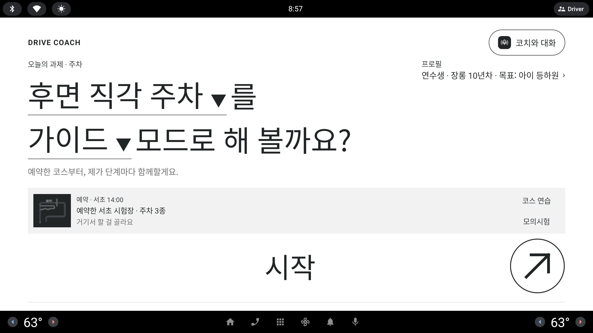

홈 · 코치 대화 버튼 — 이름 열 가지 · 마이크 기호 · 오른쪽 정렬
홈 `시작` 아래 링크 줄의 보조 알약 `코치와 고르기` 를 "AI 와 말로 대화한다" 가 읽히는 이름으로 바꾸고, 이름 앞에 마이크 기호를 붙이고, 알약을 오른쪽 열 오른쪽 끝(= `시작` 오른쪽 끝)에 맞춘다. 이름 후보 열 개를 같은 알약 모양으로 늘어놓고, 위 네 개는 홈 1/3 화면에 넣어 봤다. 예약 카드가 있는 홈도 한 장.
사용자 피드백 (원문, 10/6 저녁) — #코치와 고르기 - 이 이름 말고 AI 음성 대화 관련 좀 괜찮은 대안 10개 제시 필요 + 마이크 같은 기호도 앞에 (예. (마이크) 음성 대화
- 코치와 고르기 알약이 우측으로 정렬되었으면 해


글자 링크 + `코치와 고르기`
`시작` 아래 한 줄에 글자 링크 `과제·모드 바꾸기` 와 Lavender 보조 알약 `코치와 고르기` 가 왼쪽부터 나란히 붙어 있다. 알약 오른쪽은 열 끝까지 약 1000 dp 가 비어 있다.
문제
- 이름 — "고르기" 는 과제 시트(`과제·모드 바꾸기`)와 뜻이 겹친다. 누르면 코치와 이야기하는 시트가 열린다는 것이 이름에서 안 읽힌다
- 기호 없음 — 같은 줄의 링크와 모양만 다르고, "음성·대화" 를 알리는 표시가 없다(관리자 음성 입력 켬일 때만 마이크가 붙는다)
- 정렬 — 알약이 링크 옆에 붙어 줄 전체가 왼쪽으로 몰린다. 위 `시작` 은 열 전체 폭이라 오른쪽 끝이 허전하다
바뀌지 않는 것 · 링크 줄 자리(`시작` 아래, 홈 A1), 링크 글자, `시작` 크기, 예약 카드, 관리자 띠. 바뀌는 것은 알약의 이름 · 앞 기호 · 가로 자리 셋뿐.
이름 후보 열 가지
알약은 1/3 크기 그대로(높이 37px · 글자 12px · 마이크 Periwinkle 선). 시트 눈썹 = 알약을 누르면 열리는 코치 시트 맨 위 작은 제목(지금 `코치와 이야기`) — 알약 이름과 같은 말이면 "누른 곳에 왔다" 가 바로 읽힌다. 음절 수는 띄어쓰기 뺀 한글 기준. 옅은 줄 = 홈 화면에 넣어 본 위 네 개, 빨간 줄 = 추천.
| # | 알약 (1/3) | 시트 눈썹 | 톤 | 정직성 · 쓰임 메모 | 길이 |
|---|---|---|---|---|---|
| 01 | 코치와 대화 | 코치와 대화 | 친근 · 평이 | 가장 안전 — "대화" 는 글·칩·말 카드·(나중의) 진짜 음성을 모두 덮는다. 듣는다고 약속하지 않으면서 마이크 기호가 "말로 해도 된다" 를 보탠다. 지금 눈썹 `코치와 이야기` 와 뜻이 같아 바꾸기 쉽다. | 5음절 |
| 02 | 음성 대화 | 코치와 음성 대화 | 평이 · 기능명 | 사용자 예시 그대로. 가장 짧고 기능이 분명하다. 다만 "음성" 이 이름에 박혀 진짜 인식이 없다는 사실과 가장 멀다 — 시트 배지 `음성 입력 · 시뮬레이션` 이 반드시 같이 보여야 한다. | 4음절 |
| 03 | 코치에게 말하기 | 코치에게 말하기 | 친근 | 지금 관리자 음성 입력 켬일 때의 이름 — 하나로 합치면 바뀌는 문구가 가장 적다. 말 카드(시안 7)를 누르는 것 = "말하기" 의 시뮬레이션이라 뜻이 맞는다. 운전자가 주어라 행동이 분명. | 7음절 |
| 04 | 말로 고르기 | 말로 골라요 | 평이 | "고르기" 를 남겨 지금 이름과 이어진다(사용자가 익힌 말). 목적(오늘 할 과제 고르기)이 분명하다. 다만 "AI 와 대화" 느낌은 약하고, 링크 `과제·모드 바꾸기` 와 여전히 역할이 비슷해 보인다. | 5음절 |
| 05 | AI 코치와 대화 | AI 코치와 대화 | 기술 | "AI" 가 바로 읽혀 발표에서 눈에 띈다. 사외·오프라인(Fake)은 AI 가 아니라 키워드 규칙이라 그 빌드에서는 이름이 사실과 다르다 — 아래 `AI 코치 · 연결됨` 상태 줄과 짝을 맞춰야 정직하다. 가장 길다. | AI + 5음절 |
| 06 | 음성 코치 | 음성 코치 | 기술 · 제품명 | 기능 이름(제품 안의 한 모드)처럼 읽힌다. "음성" 약속이 02 보다 강하다 — 음성으로만 되는 코치로 오해할 수 있고, 주행 중 TTS 코치(이미 있는 음성 안내)와도 헷갈린다. | 4음절 |
| 07 | 말 걸기 | 코치에게 말 걸기 | 친근 | 가장 짧고 부담이 적다 — "화내지 않는 조수석" 톤에 맞는다. 누구에게 거는지가 빠져 있어 홈 첫 화면에서는 조금 모호하다(눈썹이 보충). | 3음절 |
| 08 | 코치에게 묻기 | 코치에게 묻기 | 친근 | 초보가 망설임 없이 누를 말. 다만 "아무거나 물어봐도 된다" 로 읽혀 일반 상식 질문을 하면 의도 목록이 정해진 코치가 답하지 못한다 — 기대와 실제 차이가 가장 크다. | 6음절 |
| 09 | 코치 부르기 | 코치를 불렀어요 | 친근 · 기술 | 차량 음성 비서의 호출을 닮아 "AI 음성" 느낌이 강하다. 호출어("하이 ○○")가 있는 것처럼 읽히는데 없다 — 시연에서 말로 부르는 장면을 기대하게 만든다. | 5음절 |
| 10 | 대화로 정하기 | 대화로 정해요 | 평이 | 목적(오늘 할 것을 정함)과 수단(대화)을 둘 다 담는다. 정직하다. 다만 딱딱하고, 버튼이라기보다 설명문처럼 읽힌다. | 6음절 |
코치와 대화
알약 폭 약 300 dp(1/3 약 100px). 링크 오른쪽 끝과 알약 왼쪽 끝 사이 약 410 dp 가 비어 두 요소가 "왼쪽 = 바꾸기, 오른쪽 = 말하기" 로 갈린다.
장점
- 오른쪽 끝이 `시작` 오른쪽 끝과 같은 세로선 — 링크 줄이 `시작` 폭 안에 양 끝으로 걸려 정돈돼 보인다
- 이름이 글·칩·말 카드 어느 입력에도 맞아 빌드·관리자 설정마다 바꿀 필요가 없다
주의점
- 손 닿음 — 알약이 지금보다 오른쪽으로 약 700 dp 멀어진다(왼쪽 운전석 기준). 정차 화면이라 규칙 위반은 아니지만 운전석 팔이 더 뻗는다
- 시트 눈썹을 `코치와 대화` 로 바꾸면 계측(`androidTest`)·캡처 스크립트에 이 문구를 찾는 곳이 있는지 같이 확인한다
구현링크 줄 Row 에 `Arrangement.SpaceBetween`(또는 가운데 Spacer weight 1) · 문구 하나 · 마이크 늘 표시 · 난이도 하
음성 대화
가장 짧은 알약(약 260 dp). 마이크 + "음성" 이 겹쳐 기능이 한눈에 읽힌다.
장점
- 사용자 예시 그대로 — 원하는 인상("AI 음성 대화")에 가장 직접적
- 짧아서 오른쪽 끝에 작게 붙어도 또렷하다
주의점
- 정직성 — 실제 음성 인식이 없는데 이름이 "음성" 이다. 시트에서 배지 `음성 입력 · 시뮬레이션` 이 말 카드·입력 칸 바로 옆에 보여야 하고, 발표에서도 "음성 입력은 시뮬레이션" 을 먼저 말해야 한다
- 주어(코치)가 빠져 누구와 대화하는지는 눈썹 `코치와 음성 대화` 가 채운다
구현후보 01 과 같음 · 난이도 하
코치에게 말하기
가장 긴 알약(약 380 dp). 링크와의 빈 틈이 약 330 dp 로 줄지만 두 요소는 여전히 양 끝으로 갈린다.
장점
- 이미 앱에 있는 문구(관리자 음성 입력 켬) — 문자열 하나를 지우고 하나로 통일하면 끝
- 운전자가 하는 행동("말하기")이 그대로 이름 — 말 카드를 누르는 동작과 정확히 맞는다
주의점
- 길어서 링크 줄이 꽉 차 보인다. 예약 카드가 있는 홈에서는 카드 오른쪽 칩 열과 세로로 겹쳐 오른쪽이 무거워진다
- "AI" 느낌은 01 보다 약하다(사람 코치에게 말하는 느낌)
구현후보 01 과 같음 · 기존 문자열 재사용 · 난이도 하
말로 고르기
지금 이름에서 앞말만 바꾼 셈(코치와 → 말로). 이 칸만 마이크를 Ink 선으로 그려 색 차이도 함께 본다.
장점
- 사용자가 이미 익힌 "고르기" 가 남아 바뀐 것이 적다. 링크는 "직접 바꾸기", 알약은 "말로 고르기" 로 수단의 차이가 대구를 이룬다
- 목적이 분명해 의도 목록이 정해진 코치의 실제 능력과 기대가 잘 맞는다
주의점
- 사용자가 원한 "AI 음성 대화" 의 인상은 넷 중 가장 약하다
- Ink 마이크는 차분하지만 글자와 붙어 "기호" 로 덜 튄다 — 기호를 앞에 둔 이유가 약해진다
구현후보 01 과 같음 · 난이도 하
오른쪽 끝 세로선이 셋
예약 카드의 칩 열(`코스 연습`·`모의시험`) · `시작` · 코치 알약이 모두 같은 오른쪽 끝에 선다. 지금 캡처의 세로 자리(카드 → `시작` → 링크 줄)는 그대로.
장점
- 오른쪽 끝선이 카드 · `시작` · 알약을 한 줄로 꿰어 예약이 있어도 정돈돼 보인다
- 알약이 링크 옆을 떠나 `시작` 바로 아래 왼쪽은 링크 하나만 — 예약 카드 칩과 알약이 서로 다른 세로 띠에 있어 "뭘 누르지" 가 덜 섞인다
주의점
- 카드 칩 열과 코치 알약이 같은 오른쪽 끝이라 둘 다 Lavender 면이 세로로 쌓인다 — 알약 쪽은 둥근 모양 + 마이크로 구분된다
- 이 상태는 화면 아래가 빠듯하다(알약 아래 약 90 dp). 관리자 띠가 있는 시연 빌드에서는 지금과 같이 띠 위로 알약 아래 여백이 줄어든다 — 위치는 바꾸지 않는다
구현예약 유무와 무관하게 같은 Row 규칙 · 난이도 하
홈에 넣어 본 네 개 비교
알약 폭은 실제 dp 어림값(마이크 + 글자 + 안쪽 여백). 정직성 = 진짜 음성 인식이 없다는 사실과 이름이 얼마나 맞나.
| 후보 | 알약 폭 | "AI 음성 대화" 인상 | 정직성 | 지금 문구와의 연속 | 시트 눈썹 |
|---|---|---|---|---|---|
| 01 코치와 대화 | 약 300 | 보통 (마이크가 보탬) | 높음 — 모든 입력을 덮음 | 눈썹 `코치와 이야기` 와 같은 뜻 | 코치와 대화 |
| 02 음성 대화 | 약 260 | 가장 강함 | 낮음 — 배지 필수 | 새 문구 | 코치와 음성 대화 |
| 03 코치에게 말하기 | 약 380 | 보통 | 보통 — 말 카드와 맞음 | 이미 있는 문구 | 코치에게 말하기 |
| 04 말로 고르기 | 약 290 | 약함 | 보통 | 지금 이름과 앞말만 다름 | 말로 골라요 |
코치와 대화 오른쪽 끝 정렬 · 마이크 Periwinkle 선
"대화" 는 글 입력 · 칩 · 말 카드(시안 7) · 나중의 진짜 음성까지 모두 사실대로 덮어, 음성 인식이 없는 지금도 이름이 거짓이 되지 않는다. "AI 음성" 인상은 앞의 마이크 기호와 시트 배지 `음성 입력 · 시뮬레이션` 이 맡는다.
- Codex: 링크 줄 Row 를 열 폭 양 끝 정렬(링크 왼쪽 · 알약 오른쪽 끝 = `시작` 오른쪽 끝) · 알약 문구 `코치와 대화` 하나로 통일 · 마이크(Periwinkle 선) 늘 표시 · 시트 눈썹 `코치와 대화`
- Claude: 관리자 "시뮬레이션 음성 입력" 켬/끔에 따라 이름이 바뀌던 분기 제거(시트 안 입력 방식만 바뀜) · 계측 문구 계약 갱신
- 사용자가 "음성" 이 이름에 꼭 보이길 원하면 02 `음성 대화` — 이때는 시트 배지가 말 카드 바로 옆에 늘 보이는 것을 조건으로